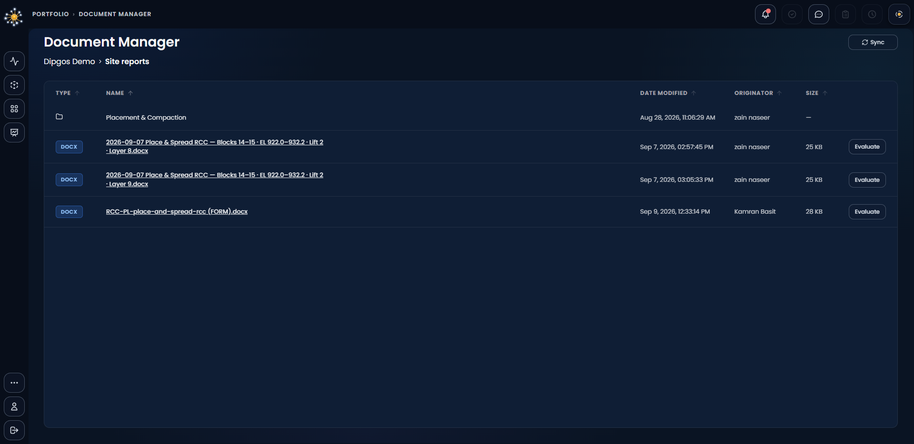
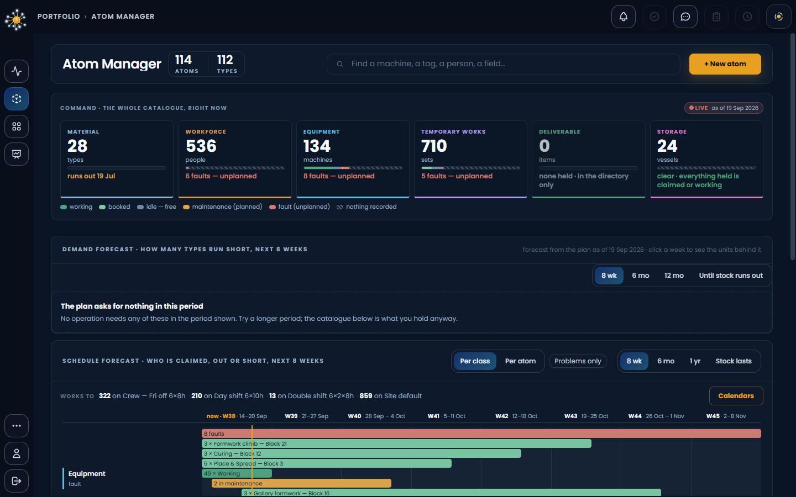
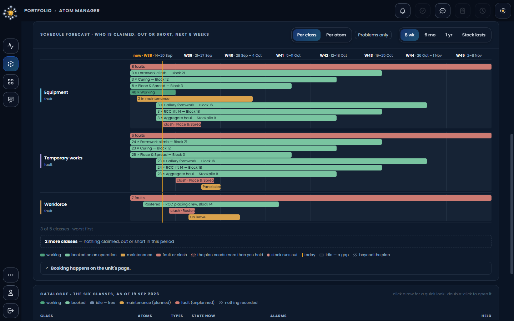
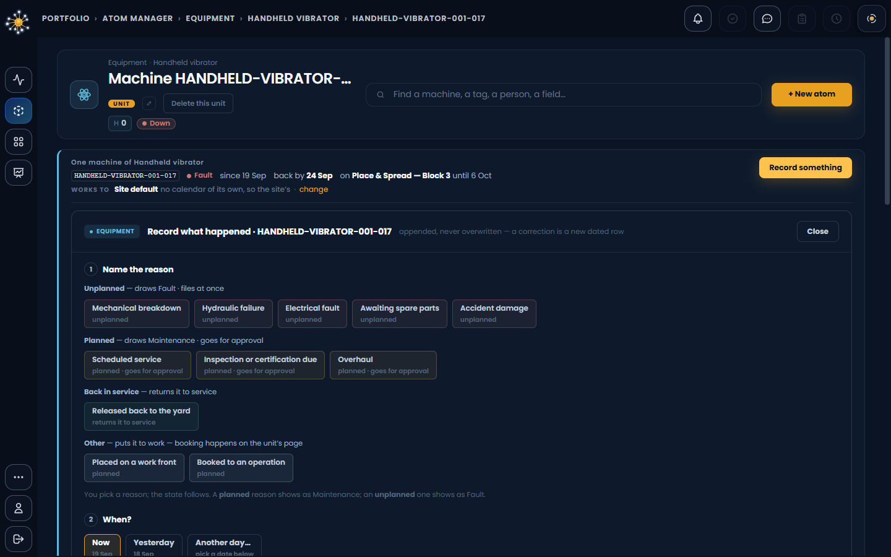

The world needs a new way to build.
We’re rebuilding how the world builds, starting with the work itself.
Every pour checked against the method, owned by a named engineer, and counted the day it happens.
DiPGOS is the project operating system for engineering and construction megaprojects. It models the project the way it is actually built: every scope, work front, operation, crew, machine and material, and the method that governs them. People decide. The system keeps the record.
Running on an RCC dam: Stage 1, Blocks 12–24, EL 898–990 m.†
- 1FeasibilityFEL 1
- 2ScopeFEL 2
- 3Front-end designFEL 3
 CPDSBuilt4Tender & bid
CPDSBuilt4Tender & bid- 5Detailed engineering
- 6Procurement
- ACCSBuilt7Construction
- 8Commissioningand handover
- AOSPlanned9Operations
Each phase makes its decisions in its own tools, then hands the next phase a pile of documents. Each break in the band is one of those handovers.
CPDS covers tender to proposal. Built, and piloted with an EPC contractor’s engineers.†
ACCS covers execution control. Built, and running on an RCC dam.†
AOS covers operations. Planned.
Roads, dams, cities, power plants: every physical thing around us was delivered by engineering and construction. It is the largest industry on earth, at $15 trillion a year. Its greatest work is still ahead: the build now coming is the largest in the history of human civilisation.
And the largest things we build run late as a rule.
- 96%
The average cost overrun across 245 large dams in 65 countries. Three in four ran over budget; eight in ten ran late, by 2.3 years on average.1
- 16 years
How long Neelum-Jhelum took against a planned 8. Its cost went from Rs 84.5 bn to Rs 423 bn.2
- 59%
The share of Pakistan’s 931 ongoing federal development projects that were running late.3
- 98%
The share of megaprojects that overrun their budget by more than 30%. 77% finish at least 40% late.4
None of this comes from a shortage of engineering talent. It comes from not having a shared, current and trusted account of the work: what was done, where, by whom, to what standard, and who approved it.
Dams completed after 2000 have overrun less than earlier ones, at 33% on cost and 18% on schedule on average.5 The trend is better, but the problem remains.
The model of the project gets rebuilt at every handover.
A megaproject passes through nine phases. Each makes its decisions in its own tools, then hands the next phase a pile of documents.
- The Employerpays.
- The Engineeradministers the contract and rules on claims (FIDIC Red and Yellow Books).9
- The contractorbuilds.
- Subcontractors and suppliersdeliver packages.
Four parties, four sets of systems, one piece of concrete.
1FeasibilityFEL 1
- Decides
- Is there a project worth doing?
- Lives in today
- Spreadsheets, studies
- Breaks when
- Estimates carry a −50%/+100% range.6
2ScopeFEL 2
- Decides
- Which single option to take forward
- Lives in today
- Spreadsheets, early schedules
- Breaks when
- The chosen option’s assumptions are never carried forward as data
3Front-end designFEL 3
- Decides
- Final investment decision, contract strategy
- Lives in today
- P6, estimating tools
- Breaks when
- The control budget is set at −20%/+30% and then treated as fact6
4Tender and bid
- Decides
- Price, programme, method
- Lives in today
- Excel, Word, norms in people’s heads
- Breaks when
- Man-hours rest on norms nobody can trace
CPDScovers tender to proposal. Built, and piloted with an EPC contractor’s engineers.†
5Detailed engineering
- Decides
- Issued-for-construction drawings
- Lives in today
- BIM, document control (Aconex, Forma)
- Breaks when
- Drawings and the schedule describe the work in different words
6Procurement
- Decides
- What arrives, and when
- Lives in today
- ERP (SAP), spreadsheets
- Breaks when
- Deliveries aren’t tied to the operations that need them
Construction
ACCSBuilt, and running on an RCC dam.†- Decides
- Sequence, quality, change, payment
- Lives in today
- P6 monthly, site bar charts, paper forms, Excel
The tools record the project. None of them runs it.
Primavera P6 is the industry’s schedule of record, and it is very good at being one. The trouble is everything that has to happen outside it.
The plan is monthly. The site is daily.
Schedule updates are normally monthly, while superintendents run the job from one- or two-week bar charts.7 Only about half of the work assigned to crews at the start of a week is completed as planned.8
Percent complete is an opinion.
A supervisor’s estimate is the measure “most prone to overstatement and the hardest to audit”.10 In one documented case a contractor reported activities as “90% complete for several months” to hide missed starts.11
The method statement is a PDF.
The limits that decide whether a layer is acceptable (thickness, unloading height, temperature, roller passes) live in a document. They aren’t data that anything checks.
Every system names the work differently.
The WBS in the schedule, the cost codes in the ERP and the numbers in the document register each describe the same concrete.12 Moving data between them is manual in 49% of cases.13
Nobody can say who approved what.
On Tarbela’s 5th extension, a contractor’s cofferdam change the contract did not allow was accepted conditionally by the Engineer and approved by the employer. The inquiry held all three responsible, and the cost rose from Rs 82 bn to about Rs 317 bn.14
Data is collected, then ignored.
95.5% of engineering and construction data goes unused.15 Team members spend 14 hours a week on conflict, rework and hunting for information, 5.5 of them hunting for data alone.16
The industry does not need another tool on the pile. It needs a model of the work that every tool, and every person, can read.
DiPGOS starts from what the project is made of.
Most software models documents, dates or geometry. DiPGOS models the work: the things a project is made of, how they relate, and the method that governs them. Every screen, form, check and figure reads from that one model.
- Project
- Contract
- Scope
- Activity
- Process
- Operation
The breakdown of the job, down to a single operation such as “Place & spread RCC”.
- Work front
- A bounded place and time where an operation happens. For example: Blocks 14–15 · EL 922.0–932.2 · Lift 2 · Layer 7.
- Atom
- Anything the work consumes or uses, in six classes: material, workforce, equipment, temporary works, deliverable, storage. Each unit is one physical thing, such as roller 3 of 12, or formwork set 037 of 581.
- Run
- One filed report of work on a work front.
- Data point
- One measured check on that report.
- Alarm / NCR
- A breach, with its margin.
- Decision
- A sign-off, with its approver and reason.
How the things relate
- Operationperformed atWork front
- Operationprecedes, with a lag in hoursOperation
- Operationrequires, with quantitiesAtom
Batch & mix, for instance, uses 90 kg of pozzolan and 95 L of water.
- AtomneedsAtom
A vibratory roller needs one operator per machine-hour and 8 L/h of diesel.
What people do to them
- File a run
- Check it against the method
- Raise an NCR
- Request a sign-off
- Approve or reject, with a reason
- Freeze a baseline
- Certify quantities for billingin progress
The method statement becomes the model
Diamer-Basha’s RCC method statement† is loaded as data: 6 processes and 21 operations, each with its limits.
The same limits generate the paper form the foreman fills in, the screen form, the checks, the alarms, and the approver each output goes to.
| Operation | Limit |
|---|---|
| Place & spread | Unloading height ≤ 1.5 m; layer 33 cm |
| Compact | Roller ≤ 2.5 km/h; compacted layer 30 cm; before initial set |
| Bedding mortar | 10–15 mm |
| Aggregate | Moisture ≤ 5% |
| Haul | Dump truck ≤ 15 km/h (safety) |
| Cure | 14 days |
The model’s shape; in development
One verdict per discipline, never a single pass/fail
A check is judged separately by each discipline that owns part of it: the site engineer for geometry, the materials engineer for physical properties, the scheduler for sequence, the cost controller for money, and so on across nine owners.
A verdict reads like “Not satisfied: physical, 5 °C short, materials engineer”, not a red cross.
One layer, one day.
Work front Blocks 14–15 · EL 922.0–932.2 · Lift 2 · Layer 7. Operation: Place & spread RCC. 820 m³.† (Illustrative timeline. The values come from a real sample record sheet.)
06:40
Paper
The foreman fills in the RCC-PL sheet on paper, as always. The sheet itself says: “A blank is recorded as ‘not answered’, never as a pass.”
PFJV / Descon† · RCC Dam Construction Stage 1 · Method Statement MS-348 · Daily site record
Place & Spread RCCRCC-PL
| Check | Limit | Recorded |
|---|---|---|
| Slope | ≤ 1:10 | 1:11 |
| Unloading height | ≤ 1.5 m | 2 |
| Layer | 33 cm | 35 |
| Temperature | < 18 °C | 18.5 |
A blank is recorded as “not answered”, never as a pass.
In a typical stackThe sheet goes into a folder.
07:05
Read
A photo of the sheet lands in the site-reports folder. DiPGOS reads it and matches it to its work front by the site’s own words. A person confirms each value, because nothing is written without a source. A sheet that could belong to two fronts is parked, not guessed.

The site’s own wordsIn a typical stackThe numbers are retyped into a spreadsheet days later.
07:06
Checked
Four checks against the method:
| Check | Recorded | Method | Verdict |
|---|---|---|---|
| Slope | 1:11 | ≤ 1:10 | satisfied |
| Unloading height | 2.0 m | ≤ 1.5 m | 0.5 m over |
| Layer | 35 cm | 33 cm | 2 cm over |
| Temperature | 18.5 °C | < 18 °C | 0.5 °C over |
07:06
Owned
Three NCRs are raised, each with its margin, and routed to the approver the method names.
- NCR: unloading height0.5 m over
- NCR: layer2 cm over
- NCR: temperature0.5 °C over
In a typical stackThe 2 cm, if anyone notices it, becomes an email.
11:30
Decided
The consultant’s representative reviews the layer and records the decision with a reason. Closing or reopening an NCR also needs a reason, and every step stays in the history.
18:00
Counted
820 m³ counts against the frozen baseline. Float on the following operations recomputes, and the day’s quantities are ready for certification.
In a typical stackAt month-end the activity’s percent complete goes up in P6.
Same concrete, same people. The difference is that the record exists the day the work does.
The command centre, not a dashboard.
The operational command centre your team runs the work from, and takes decisions in. One place: where the work stands, what it’s made of, and how it’s performing.
 What
Where
How
WhatWhereWhatHow
What
Where
How
WhatWhereWhatHowWhere: the live map.
What: scope and work fronts.
How: productivity, quality and business.
Atom Manager: the whole catalogue, right now
536 people, 134 machines, 710 sets and 24 vessels, LIVE · as of 19 Sep 2026.

536 people, 134 machines Live, with its dateSchedule forecast: who is claimed, out or short over the next 8 weeks
Lanes such as 3 × Formwork climb — Block 21, and the clashes between them.

Claimed ClashRecord what happened
A fault recorded against one unit: appended, never overwritten — a correction is a new dated row.

Appended, never overwritten8Commissioning and handover
- Decides
- Take-over
- Lives in today
- Completion systems, document registers
- Breaks when
- As-built truth is reconstructed from paper
9Operations
- Decides
- Keeping the asset running
- Lives in today
- CMMS / asset systems
- Breaks when
- The history of how it was built is gone
AOScovers operations. Planned.
AI proposes. A named engineer decides. The record keeps both.
DiPGOS uses AI where it removes the typing, not the judgement. It reads a photographed site sheet into a proposal for a person to confirm. It answers questions over the tender, the design documents and the delivered record, and cites its sources every time. It never writes a value without a source, and it never signs anything off.
AI can only act on ground it understands. The model of the work is that ground.
How the record stays true.
Records in, state out.
Nothing is typed as a total. Stock, hours, progress and earned value are all computed from dated records, so you can ask what any figure said on any past date.
A blank is not a pass.
“Nothing reported” and “we looked, and there is none” are different answers, and DiPGOS keeps them apart.
Every verdict has an owner.
A breach arrives with its margin and the name of the person who must act.
Two denominators, both named.
Progress is shown against the fronts that have started and against the whole job. The first can read 101% while the second reads 36%, and both are true.
Paper stays paper.
Forms are printed from the method and read back from photos. Nobody retypes a sheet.
It sits alongside what you have.
DiPGOS works with the contract schedule as issued and the folders your site already uses. It doesn’t ask you to throw away P6.
We lived the problem before we built the answer.
Indus is built by engineers and builders who spent their careers inside real projects, and felt the gridlock first-hand. We’re not software people guessing at the industry. We’re industry people building the system we always needed.
M. Kamran BasitFounder & CEO
- Experience
- [Years in heavy civil and hydropower]
- Delivered
- [Projects delivered]
- Offices
- [Offices: Pakistan · USA]
- Entities
- Indus Technology Solutions (Pvt) Ltd
Indus Technologies LLC, USA
Let’s shape the future of how the world gets built.
Bring us the project you trust least. We’ll show you what its record would look like.
Sources
- Ansar, Flyvbjerg, Budzier & Lunn (2014), “Should we build more large dams?”, Energy Policy.
- Water Power Magazine, “Audit declares Neelum-Jhelum hydropower project a failure”.
- PIDE Working Paper 2023:10, Reforming the Federal PSDP.
- McKinsey (2015), The construction productivity imperative.
- Plummer Braeckman, Disselhoff & Kirchherr (2020), International Journal of Water Resources Development.
- AACE International 18R-97, cost estimate classification.
- Long International, “Contract scheduling provisions”.
- Ballard (2000), The Last Planner System of Production Control.
- ICCP, “FIDIC Red, Yellow and Silver Books”.
- Gather Insights, progress measurement.
- Ankura, “Construction schedules: why owners should monitor and care”.
- Quollnet, “Work breakdown structure explained”.
- JBKnowledge 2020 ConTech Report, via Construction Dive.
- Dawn, Tarbela 5th extension inquiry.
- FMI & Autodesk (2021), Harnessing the Data Advantage.
- FMI & PlanGrid (2018), Construction Disconnected.
† Named with the client’s permission pending. The $15 trillion figure is the owner’s, from the current site, and still needs a source.